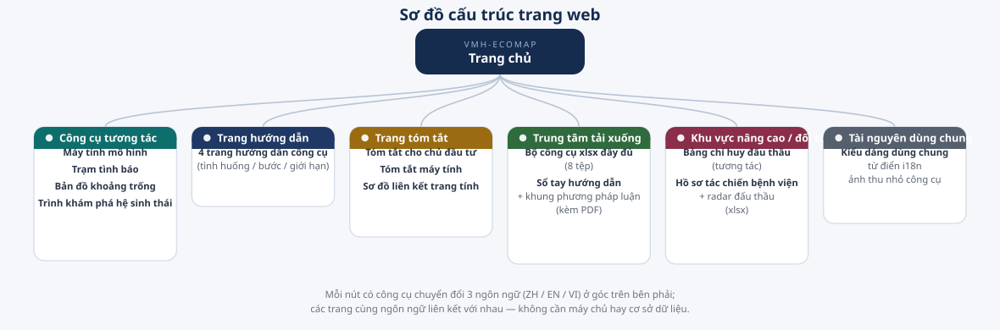

Trước tiên, hãy cho biết bạn là ai
Mỗi vai trò quan tâm câu hỏi khác nhau — đây là lối đi trực tiếp, không cần tự tìm.
Chủ đầu tư bệnh viện
2. Máy tính mô hình tính toán dự án của bạn
3. Tóm tắt cho chủ đầu tư mang vào cuộc họp
Nhà đầu tư
2. Đồng hồ pháp lý xem thời điểm
3. Dữ liệu thị trường mọi số liệu đều có nguồn
Đối tác liên minh
2. Danh mục nhà cung cấp xem ai cùng tầng
3. Sơ đồ trang tính xem toàn cảnh
Cố vấn / Nội bộ
2. Cách cập nhật mô hình bảo trì
3. Khu vực nâng cao / đối tác công cụ đấu thầu & hồ sơ
Công cụ tương tác
Không cần cài đặt, không cần tải xuống — mở là dùng được. Mọi tính toán chạy trong trình duyệt, dữ liệu nhập vào không được tải lên.
Máy tính mô hình kinh doanh
- Tính toán ngay trong cuộc họp với chủ đầu tư
- Thuyết phục thay thiết bị mới
- Đầu tư bắt buộc trước hạn quy định
- Chọn nhóm đầu tư——6 nút phía trên: A Tạo doanh t…
- Chọn tình huống mẫu——Mỗi nhóm có 3-4 tình huống mẫu…
- Chỉnh thông số và xem thay đổi——Di chuột vào biểu tượng ⓘ cạnh…
Trạm tình báo y tế Việt Nam
- Xác nhận thời điểm trước khi thuyết trình
- Bị hỏi về đối thủ cạnh tranh
- Cần trích dẫn số liệu cho bài thuyết trình
- Xem đồng hồ pháp lý——Các mục chưa có hiệu lực xếp t…
- Tra cứu động thái đối thủ——Nhấp vào tên công ty để mở cửa…
- Tự duy trì dữ liệu——Nút "✎ Chỉnh sửa dữ liệu" ở gó…
Bản đồ khoảng trống Việt Nam
- Quyết định vùng ưu tiên
- Trình bày cơ hội địa phương cho chủ đầu tư
- Nắm bắt khoảng trống toàn quốc
- Nhấp vào ô tỉnh——Sự kiện địa phương và nguồn dữ…
- Xem thẻ khoảng trống toàn quốc——Sáu thẻ bên dưới là khoảng trố…
- Cập nhật dữ liệu——Nút "⟳ Tải dữ liệu cập nhật" ở…
Trình khám phá hệ sinh thái
- Giúp đối tác tự định vị
- Trình chiếu trong cuộc họp khảo sát
- Tìm khoảng trống thị trường
- Duyệt theo tầng hoặc phân loại——7 tầng: L1 Hạ tầng vật lý / L2…
- Nhấp vào thẻ để xem chi tiết——Mỗi cơ hội có mô tả, xu hướng …
- (Nâng cao) Tải tệp Excel của riêng bạn——Nếu bạn có bộ công cụ Excel ch…
Trang tóm tắt
Phiên bản cô đọng cho người không có thời gian — một trang, một ý.
Khu vực nâng cao / đối tác
Khi một dự án chuyển từ "đánh giá" sang "theo đuổi", đây là các công cụ tác chiến — khóa mục tiêu và chuẩn bị hồ sơ dự thầu. Khu vực này đi sâu vào chi tiết từng dự án cụ thể; hãy xác nhận vai trò với đầu mối liên minh trước khi sử dụng.
Bảng chỉ huy đấu thầu
Tải Excel
Trung tâm tải xuống
Các tệp phục vụ công việc ngoại tuyến. Công cụ Excel nên mở trên máy tính để bàn; tài liệu có kèm bản PDF nên mở được cả trên điện thoại.
Giới thiệu về trang này
Ba câu hỏi bạn có thể đặt ra.
Dữ liệu lấy từ đâu?
Quy định lấy từ thông báo chính thức của chính phủ Việt Nam và cơ sở dữ liệu pháp luật; dữ liệu thị trường lấy từ Bộ Y tế, cơ quan bảo hiểm y tế, các tổ chức nghiên cứu quốc tế và truyền thông ngành; thành tích nhà cung cấp lấy từ website công ty, báo cáo thường niên và tin tức. Mỗi mục đều có nguồn và ngày xác minh — không tra được thì ghi "chưa xác minh được", số ước tính thì ghi "ước tính" — không bịa số liệu là nguyên tắc đầu tiên của bộ công cụ này.
Bao lâu cập nhật một lần?
Trạm tình báo và bản đồ khoảng trống tự động xác minh lại mỗi tháng một lần (thay đổi mốc pháp lý, động thái nhà cung cấp, dữ liệu thị trường, tin tức từng tỉnh) và xuất bản phiên bản mới. Mục nào quá 120 ngày chưa cập nhật sẽ tự gắn nhãn "cần cập nhật" ngay trên trang.
Có thể dùng trực tiếp các con số này không?
Các tình huống mẫu trong máy tính là ước tính theo giá thị trường dùng để minh họa phương pháp luận và đào tạo — không phải báo giá thực tế của bệnh viện nào. Trước khi đề xuất chính thức, hãy thay bằng báo giá thực tế và dữ liệu bệnh viện. Giá trị của công cụ nằm ở "phương pháp tính đúng", không phải "số liệu có sẵn".
Sơ đồ trang
